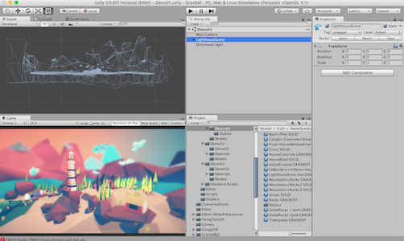

Unity

Unity is a cross-platform game engine and integrated development environment.
Pros
- Free for not for profit and education.
- Industry standard used on many famous games such as Angry Birds 2 and Kerbal Space Program.
- Strong support and active user community.
- Many paths for differentiated learning as projects can be created with no coding but at the other end the scope for complexity is unlimited and students could build a production ready game.
Cons
- Learning curve can be steep, particularly for the teacher.
- Requires moderately capable hardware to run the IDE.
- Although Unity is free there are add-ons for purchase. Whilst add-ons are not necessary there are situations where they are highly recommended and would save a lot of time. It would be prudent to budget for at least some expenditure on add-ons. The price is often low ($10-$20) with very few add-ons exceeding $100.
Recommended For
- Students with an interest in game development.
- Year 9 and 10 advanced programming classes.
- Year 11 and 12 students in vocational ICT courses.
- Introduction to 3D graphics concepts and 3D maths concepts.
- Development of interactive teaching tools that utilise 3D graphics including virtual-reality and augmented-reality.
Details
Unity is a game engine and integrated development environment that has the goal of “democratising game development”. Whilst Unity is free for not for profit and education uses it is a commercial enterprise with payment required based on the annual revenue of the organisation using it.
Unity is an industry standard tool that is widely used in many well known products. It is particularly strong in the mobile gaming and virtual reality markets. It may be motivating for students to know they are learning to use the same tool that was used to make products that they use.
Unity has a strong focus on education. Unity provide many great learning resources for free on their web site. Unity provides the Unity Educator Toolkit for free to teachers to assist them in developing secondary school curriculums that utilise Unity. Unity has also recently introduced a certification process and students could potentially sit exams to get an industry accepted qualification.
Whilst Unity is described as a game engine it can be used for many applications outside of gaming. It is often used for architectural visualisation for example. The school I am currently doing my practicum at built a 3d model of their school buildings in Unity and used that as a basis for students to build games around. However, such a 3d model could also be incorporated into virtual-reality applications for the development of applications like a 3d school tour.
On the downside Unity requires moderately capable hardware for running the development environment. The flexibility and scope of Unity mean that it can initially be overwhelming, however, it is possible to make meaningful progress by learning a small subset of its capabilities. For example, many compelling projects can be developed with no or minimal coding.
For students that want to delve into coding Unity offers many possibilities. It supports two scripting languages. One is derived from JavaScript and offers a good path for students that have familiarity with that language. The other scripting language is C# which is a modern object-oriented language on a par with Java and Switch. Unity also allows development of extensions in C or C++ and has a shader programming language for low level development of programs that run on graphics processing units.
Unity is a good choice for teaching coding to students that are motivated to learn how to develop games. Unity is a standard tool for the Australian STEM Video Games Challenge in the Year 9 to Year 12 category so that gives an indication of the age range that Unity is suitable for.
Example
This video gives an overview of the features in the latest version of Unity.